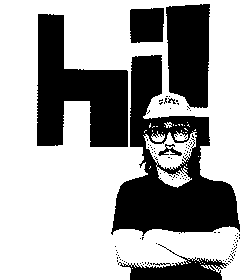
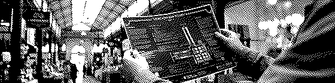
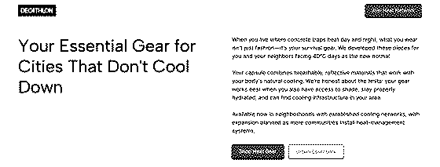
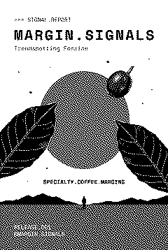

I build prototypes and design-fiction artifacts that turn research into decisions organizations can act on.
My starting point is never technology. It’s someone specific, in a specific situation, dealing with a future that arrived without asking. I trained as a sociologist before becoming a designer, and it shows: I’m less interested in what the future looks like than in who has to live in it, and how.
As Managing Partner at BPP Analytics & Design, I combine sociological research, futures design, and experimentation to support high-stakes strategic decisions. At Heated Studio, which I co-founded, I help organizations imagine and prototype climate futures.
I co-lead the relaunch of Speculative Futures Madrid, the local chapter of The Design Futures Initiative, a global community of design and futures practitioners active in 29 cities. The chapter started in 2018 and brought PRIMER Europe to Matadero in 2019. After a three-year pause, we’re bringing it back in 2026.
I designed and teach the Emerging Technologies course for UDIT Madrid’s Online Master’s in UX Design, built on a position that treats AI neither with fear nor fascination, but as a cultural force to examine.
Earlier, at Near Future Laboratory and Girardin & Nova, I delivered design-fiction projects for global clients across telecommunications, finance, defense, and mobility, turning abstract risk into artifacts teams can argue about.
I document my practice through Otros Futuros, a YouTube channel where speculative thinking becomes tangible work, and publish MARGIN.SIGNALS, an independent zine tracking weak signals from cultural margins before they harden into trends.
I was born in Buenos Aires, a city that teaches you early that scenarios flip. That turned out to be professional training.
Working on something that doesn’t have a clear future yet? Let’s talk.
Listen: Nicolás, by Matías (in Spanish)
Selected Projects
These projects turn uncertain conditions into artifacts, experiences, and systems that people can examine, discuss, and act on.
Mercado San Telmo

TL;DR: Design fiction for a century-old Buenos Aires market navigating climate change, a 15-minute city transition, and the question of what a historic place becomes when the conditions it was built for no longer hold.
San Telmo Market was built in 1897 for a city that no longer exists. This design fiction imagines it in 2031: retrofitted for extreme heat, reorganized around a 15-minute city model, with new programs layered over a century of use. The site includes a speculative map of the market and neighborhood, a tour narration recorded as if visiting from that year, and an open question about what preservation means when a place has to change to survive.
Tour narration:
See the market site · Video introduction
Rescoldo
TL;DR: A diegetic archive of a seven-course dinner at Lanín 234, Barracas — documented as if autumn 2030 had already happened, built around the question of what Argentine cuisine would have to become to deserve this table.
Seven courses at Lanín 234, Barracas — natural wines, beeswax candles from a 78-year-old beekeeper, a long table under a paraíso tree, documented as if autumn 2030 had already closed. The archive treats a single dinner as a prototype: if this is what Argentine gastronomy looks like in ten years, what had to change for it to get here?
Adaptive Museums
TL;DR: An interactive prototype set inside a civic institution during extreme heat — redesignated as emergency infrastructure and forced to choose what to protect: the collection, the building, or the neighborhood outside.
A museum during a heat emergency, redesignated as civil shelter. The prototype puts you in the position of the institution: managing collection risk, visitor flow, and neighborhood demand at once — three missions it was never designed to hold simultaneously.
Try the prototype · Video introduction
Desert Athleisure

TL;DR: A fictional sportswear collection designed for cities where summer reaches 40°C — giving fashion brands a concrete artifact to react to before extreme heat becomes the condition they're designing for, not the edge case.
A fictional sportswear line developed at Heated Studio for cities where summer heat regularly hits 40°C or above. The project takes the form of a complete product catalog, a brand identity, and a retail scenario — all designed as if the collection already exists. It gives fashion businesses something concrete to hold and react to: not a trend report about what might happen, but a thing that looks and feels like it could already be on the shelf. The question underneath it is whether brands are building toward this climate or still waiting to be surprised by it.
Landing page · Video introduction
Estación Fresca
TL;DR: The diegetic website of Buenos Aires’ first intra-market cool station — activated during the 2031 heatwave Norma, with flag codes, cool routes, and a neighborhood watch network built from the shops next door.
When the city hits 40°C, a 19th-century market becomes civil infrastructure. The Estación Fresca diegetic site exists as if it were published during heatwave Norma in 2031: it tells you which entrance is coolest, which shops have opened their back rooms, how to read the flag system on the door. A second artifact from the Mercado San Telmo 203□ universe — designed to inhabit the same future, not just describe it.
Red de Aguante
TL;DR: A playable design fiction set in a near-future Buenos Aires where the grid has failed — built around the decisions self-organized communities face when the systems they depend on stop responding.
Buenos Aires, near future. The grid has failed. Water is rationed. What do people do? A playable design fiction co-created by LAB de Mundanidad Forzada and Heated Studio, built around the decisions that self-organized communities face when the systems they depend on stop responding. Not a game about survival — a game about governance at the scale the state can no longer reach.
Cuidados en Red
TL;DR: A design fiction for an aging city whose care infrastructure was built for a different century — imagining what a neighborhood-scale care network would look like if designed today.
Buenos Aires has one of the oldest populations in Latin America and a care infrastructure that wasn’t built for it. This design fiction imagines what elder care networks would look like if designed now — peer-based, neighborhood-scale, built around the relationships that already exist rather than the institutions that don’t reach.
OFFicial
TL;DR: A voice assistant prototype for people navigating integration after displacement — designed to collect the kinds of information institutions were never built to ask for.
A voice assistant for people navigating integration after displacement. Built around the gap between what institutions need to know and what they know how to ask — using conversation rather than forms to surface the things that don’t fit in a field.
Writing
A collection of essays, workshops, frameworks, and investigations into how people imagine, design, and live through uncertain futures.
Futures
Essays, workshops, and frameworks for thinking about what comes next when familiar patterns stop working.
- The Most Measured Body on the Planet Is Thirteen Years Old
- Could, Should, Might, Don't: A Practitioner's Reading
- Designing Futures from Fugue: A workshop on brains that leave (and those that might return)
- What if the State Designed Futures? A day in Buenos Aires revealed how speculative design, weak signals, and institutional fiction can become fundamental tools for public policy
- Viveza Criolla: A Design Fiction Lens on Strategic Adaptation
- A practical guide to changing how you see the everyday objects and spaces around you
- Turning the Tide: How Argentina Can Transform Short-Term Survival into a Future-Ready Strategy
- Comment réimaginer le futur au quotidien? / Re-imagining everyday futures
- Prospective Methodology Based on Futures Design
- How to prepare for and anticipate contingencies by proposing narratives and artifacts through Futures Design
AI and Personal Software
Notes on building with tools I’m still figuring out — and the everyday friction of working alongside machines.
- Teaching Artificial Intelligence to UX Designers: Notes from a masterclass with Fabien Girardin and Rohit Gupta for UX design students at UDIT
- Making Software Without Having Learned to Program: A perspective from Latin America
- The Hand of God Now Lasts Three Seconds
- Training Creatures I Don't Understand
- They Asked Me If I Was a Bot
- No, the plane doesn’t have AI. And that opens up more interesting questions than the ones it tries to answer
Futures of Food
Food as a futures problem: what climate, culture, and politics are doing to what we eat — and what we might eat next.
- A Manifesto for a New Argentinean Cuisine
- What is carbon-neutral gastronomy?
- What is ethical meat and sustainable proteins tasting?
- The gastronomic offer of San Telmo Market in a 15-minute city
Futures of Climate
Cities adapting to a climate that didn’t ask permission. Work with students, institutions, and communities across Madrid and Buenos Aires.
- Day 3 of Norma: Notes from the first summer of Cool Station №1, inside the San Telmo market
- Inhabiting the future: climate design fiction with French spatial design master's students
- How I Prototyped an Alternative Future Climate with Design Fiction & GenAI
- How Madrid could adapt to extreme heat without losing its essence
- A speculative tour of San Telmo Market in a future Buenos Aires
- Collective trauma and community resilience after a climate disaster
Editorial
A channel and publication for documenting practice, following weak signals, and making speculative thinking tangible.
Otros Futuros
Futures design, design fiction, speculative design.
Weak signals from the present. Futures-thinking methods. Speculative experiments, live. The orientation is toward making things: show the future, don’t tell the future.
What I’ve learned, what I’ve applied, what I’m still testing — from practice.
New content every week. Watch on YouTube.
MARGIN.SIGNALS

An independent publication tracking weak signals from cultural margins before they reshape the industry.
Release 001: Specialty.Coffee.Margins
What happens when coffee's margins challenge its center? This trendspotting fanzine explores master plant protocols, intentional defect fermentation, and decolonised cupping: patterns of hierarchy inversion you'll see elsewhere soon.
Limited prototype run. Access by direct request only.
| Digital edition | €8 |
| Physical edition (limited print) | €15 |
| Dual bundle (digital + print) | €24 |
Request your copy at nicolas.bronzina@gmail.com or via @margin.signals on Instagram.
Field notes
Sound, ritual, tools, places, and everyday forms of attention that sit alongside my main practice.
Play•ground
An ongoing music project exploring sound as an instrument, an environment, and a way of being present. Play•ground moves between web-based instruments, live audio, spatial listening, and inhabitable sound.
- play•ground mk-1
- Web-based music creation tool. 8-track drum sequencer, synthesizer, 4-slot looper with mic input.
- play•ground mk-2
- two decks and a mixer in the browser. drop two records, grab the disc, crossfade.
- play•ground mk-air
- Experience live audio that exists only in the moment: no recording, no archive. Broadcasts that challenge your relationship with permanence and presence.
- play•ground mk-dwell
- A habitable sound space. Your cursor is your position. Move toward a corner and a sound emerges, move away and it fades. The center breathes.
Coffee
An ongoing investigation into coffee as culture, ritual, equipment, labor, taste, and place.
- Coffee.txt
- Specialty coffee guide for Madrid.
- Coffee Decoded
- Practical guide to home coffee equipment.
Curriculum
Download: CV in English (PDF, 43 KB) · CV en español (PDF, 44 KB)
Experience
- Speculative Futures Madrid (The Design Futures Initiative)
Chapter Co-Lead - Co-leading the relaunch of Speculative Futures Madrid, the local chapter of The Design Futures Initiative, active in 29 cities. Bringing the chapter back after a three-year pause and building community through talks, workshops, and open gatherings around speculative design, design fiction, and strategic foresight.
- UDIT, Universidad de Diseño, Innovación y Tecnología (Madrid, Spain)
Emerging Technologies Curriculum Designer, Online Master’s in UX Design Designed and authored the Emerging Technologies course for UDIT Madrid’s Online Master’s in UX Design. The six-ECTS course examines how technologies emerge, stabilize, and reshape design practice through science and technology studies, philosophy of technology, speculative design, and AI as both material and tool.
Across six units, students develop an AI system from their own UX practice, moving from observation to speculative prototyping and professional proposals. The course is grounded in a position of neither fear nor fascination toward AI.
- Lab de Mundanidad Forzada
Research Coordinator & Lab Initiator - Coordinate collaborative experiments that help teams understand forced mundanity through ethnographic methods and design interventions. The lab creates research frameworks that can be adapted to different organizational and cultural contexts.
- Heated Studio
Co-founder & Design Fiction Lead - Help organizations prepare for climate futures through design-fiction prototypes and strategic foresight, turning abstract climate risks into tangible strategies that teams can examine and test.
- BPP Analytics & Design
Managing Partner - Combine sociological research, futures design, and experimentation to transform uncertainty into strategic clarity and actionable insight.
- Girardin & Nova
Design Researcher - Delivered design-fiction projects for global organizations across telecommunications, financial services, defense, and mobility, helping teams navigate sector transformation and anticipate emerging challenges.
- Near Future Laboratory
Design Researcher - Explored emerging technology futures for mobility sectors through design fiction, creating prototypes that helped organizations anticipate social and technological transformation before it arrived.
Teaching
- Universidad ORT Uruguay (Montevideo, Uruguay)
Guest Professor, Master’s in Strategic Design and Innovation - Taught students to transform abstract future scenarios into tangible diegetic artifacts through speculative prototyping. Working from STEEP-mapped scenarios, student teams produced four artifacts while learning three operational principles:
- Artifacts think: objects process ideas; they do not simply illustrate them.
- Ecosystems validate: surrounding contexts make speculation credible.
- Friction is the material: everyday imperfections ground future visions in reality.
- ESAA La Martinière-Diderot (Lyon, France)
Guest Lecturer, DSAA Design Espace - Delivered a talk and hands-on activity on climate design fiction for spatial-design master’s students visiting Madrid. The session introduced future-mundane methods and diegetic artifacts through Matadero as a living case study.
- UDIT, Universidad de Diseño, Innovación y Tecnología (Madrid, Spain)
Guest Lecturer, Master’s in UX Design - Led an intensive masterclass with Fabien Girardin and Rohit Gupta, introducing UX designers to AI-enhanced design-fiction methods and practical tools for anticipating the effects of emerging technologies on their work.
- Domus Academy (Milan, Italy)
Guest Workshop Co-facilitator - Guided design students in developing speculative urban futures for extreme-heat scenarios, introducing weak-signals analysis and climate-foresight methods.
- CESBA, Consejo Económico y Social de la Ciudad de Buenos Aires (Buenos Aires, Argentina)
Event Organizer & Opening Keynote - Presented frameworks for integrating futures design into public policy and proposed a Futures Anticipation Unit to help government navigate uncertainty through institutional design fiction.
Education
- UDIT, Universidad de Diseño, Innovación y Tecnología (Madrid, Spain)
- Master’s Degree in User Experience for the Design of Digital Products and Services
- Universidad del Salvador (Buenos Aires, Argentina)
- Bachelor’s Degree in Sociology
- Institute for the Future (California, United States)
- Certification in Future Thinking & Forecasting
Core expertise
I help organizations prepare for uncertain futures through design fiction, futures prototyping, sociological research, and AI-enhanced experimentation. My work turns weak signals and abstract risks into tangible strategies, artifacts, and situations that teams can examine, discuss, and act on.
Methods: Design fiction · Futures prototyping · Speculative scenarios · Strategic foresight · Weak-signals analysis · Ethnographic research · Workshop facilitation · AI-enhanced prototyping
Sectors: Climate adaptation · Urban resilience · Mobility · Defense · Financial services · Telecommunications